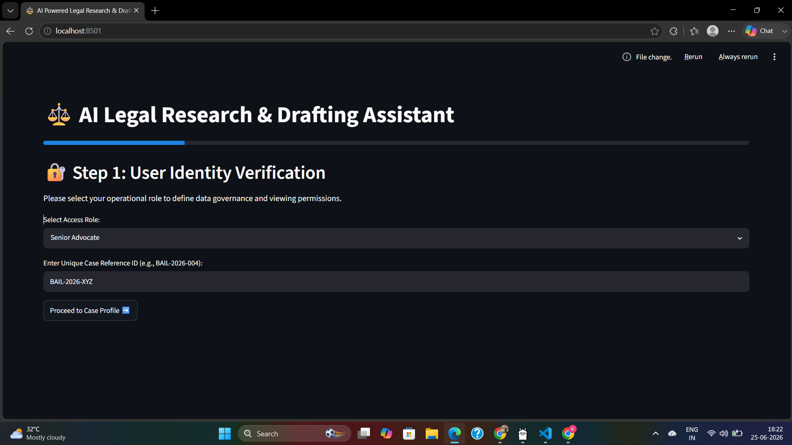
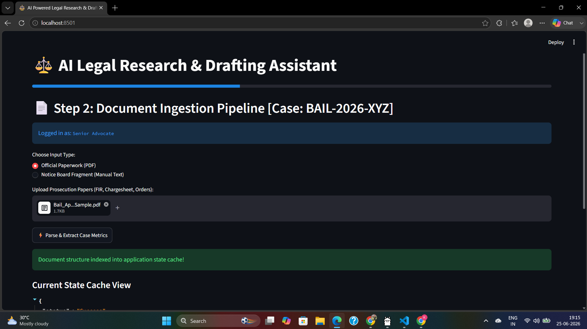
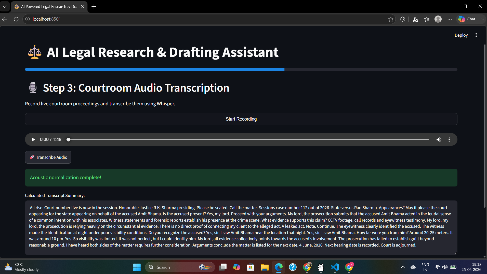
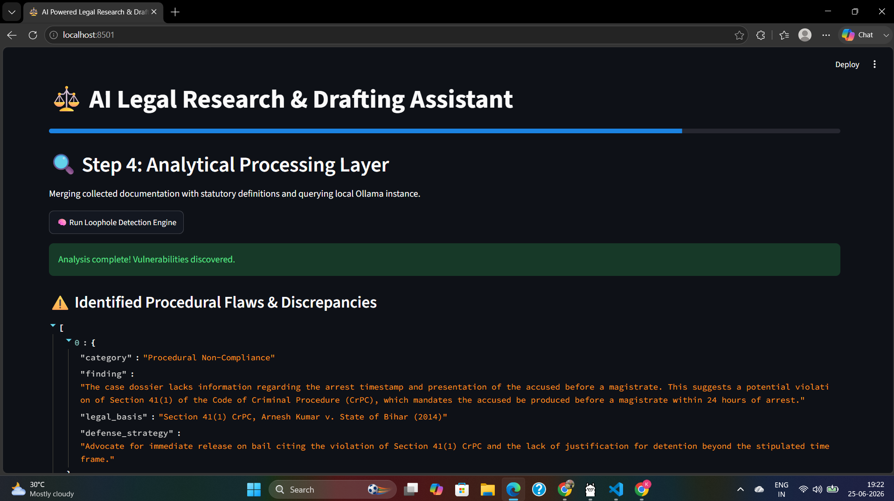
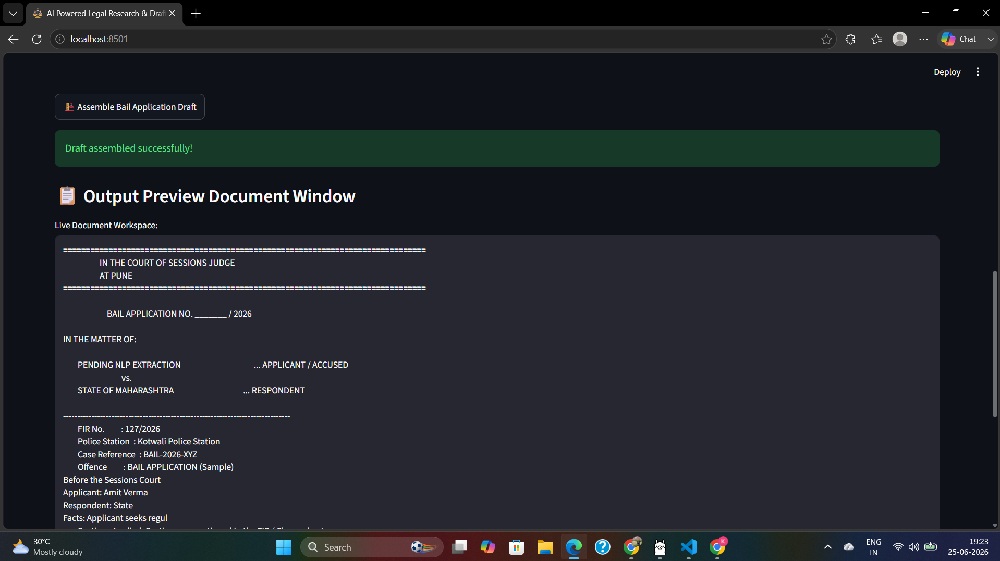

An AI-driven legal intelligence platform that automates research, detects procedural loopholes, and generates court-ready legal drafts.
Retrieves relevant legal provisions, case laws and judicial precedents using Retrieval-Augmented Generation (RAG).
Converts courtroom speech into accurate text using OpenAI Whisper with multilingual speech support.
Generates court-ready legal drafts, summaries and structured reports within seconds.
Runs locally using Ollama and Gemma to keep sensitive legal information secure and confidential.
AI Powered Legal Research and Drafting Assistant is an AI-driven legal intelligence platform designed to support advocates, legal researchers, law students, and law firms. The platform automates courtroom transcription, legal document processing, legal research, procedural loophole detection, and court-ready draft generation. By integrating Whisper, ChromaDB, Ollama, Gemma, FastAPI, OCR, and Retrieval-Augmented Generation (RAG), the system reduces manual effort while improving legal research efficiency and drafting accuracy.
Legal research requires analyzing large volumes of statutes, precedents, and case documents.
Junior advocates spend significant time preparing repetitive legal drafts and applications.
Capturing courtroom discussions accurately remains a challenging task.
Important procedural violations often remain unnoticed during case preparation.
Retrieve relevant laws, statutes and legal precedents instantly.
Convert courtroom conversations into structured transcripts.
Extract facts and legal information automatically using OCR.
Detect inconsistencies and procedural violations intelligently.
Ground AI responses with relevant legal knowledge and precedents.
Generate court-ready legal documents automatically.
Uses local AI infrastructure powered by Ollama and Gemma.
Complete workflow from evidence ingestion to draft generation.
Explore each module of the legal intelligence pipeline. Click any card to learn more.
Courtroom Speech-to-Text Input
Legal Document Parser
Legal Knowledge Base
Loophole Detection Engine
Draft Generator
A complete walkthrough of how the AI Powered Legal Research & Drafting Assistant transforms courtroom inputs into structured legal intelligence and court-ready drafts.

Start a new legal case by selecting either Voice Recording or Document Upload. The platform securely accepts courtroom audio and legal documents as input.

FIRs, charge sheets, court orders, witness statements and other legal documents are uploaded and prepared for AI-driven processing.

Whisper converts speech to text while OCR extracts document content. The system cleans, structures and prepares the information for legal reasoning.

Using Retrieval-Augmented Generation (RAG), ChromaDB and Gemma, the platform retrieves relevant laws, precedents and identifies procedural inconsistencies.

The final output includes professionally formatted legal drafts, case summaries and research references, significantly reducing manual effort for legal professionals.